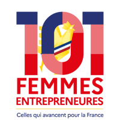

Drone multispectral · Intelligence artificielle · Vignes bio
Détecter tôt,
traiter peu.
Nous survolons les vignes bio de Provence et disons aux vignerons où aller voir. Moins de temps perdu dans les rangs, plus de temps là où ça compte.

Le drone ne remplace pas la prospection.
Il dit où aller pour gagner du temps.
Les vignerons nous l'ont dit cet été : le temps manque, les coûts montent, la relève se fait rare, le climat rend les maladies imprévisibles. En 30 minutes par hectare, le drone regarde toute la parcelle avec la même attention partout.
Résultats 2026 · Mildiou · Parcelle de Marsanne
Ce que le drone a vu
Le vigneron savait qu'il y avait du mildiou, sans nous dire où. Le drone devait retrouver les foyers seul.


Notre solution
Survoler, repérer, vérifier
Survoler
Chaque parcelle, chaque mois, à la même heure et à la même hauteur. 2 cm par pixel : chaque cep est visible.
Repérer
La caméra mesure la lumière que renvoie le feuillage. L'intelligence artificielle désigne une vingtaine de secteurs à aller voir, classés, avec leurs coordonnées GPS.
Vérifier
Le vigneron confirme ou infirme au sol. Chaque vérification nourrit le modèle, plus précis à chaque vol.
Mildiou · Oïdium · Flavescence dorée · Comptage des manquants · Découvrir la méthode complète

6 des 8 zones désignées par le drone avant la prospection étaient plus denses en ceps atteints que la moyenne. Le drone retrouve où la maladie se concentre, pas encore chaque cep.
Le drone dit aussi où ne pas aller
10 / 16parcelles suivies pour le mildiou et l'oïdium sans dysfonctionnement majeur. Moins d'1 ha à aller voir en priorité, sur environ 21 ha survolés.

Intelligence collective
Les fragilités des uns deviennent la force du collectif.
Chaque parcelle survolée et chaque cep vérifié au sol enrichissent un modèle qui profite à tous les vignerons du territoire. Les données restent celles de chaque domaine, les résultats sont anonymisés.
Rejoindre la campagne 2027Qui sommes-nous
Nés en Provence, les pieds dans les vignes
Petite-fille d'agriculteurs, Julie Demarigny a passé vingt ans dans la transformation digitale, de Warner Bros. à Los Angeles. De retour en Provence, elle fonde Agritech Provence à Apt avec Ugo Bondil, ingénieur agronome. Tous deux sont télépilotes et volent eux-mêmes sur chaque parcelle.
Recherche et développement avec l'Institut Agro Dijon et Polytech Lyon.
Récompensée en 2026

101 Femmes EntrepreneuresLauréate Vaucluse · Bpifrance et ministère chargé de l'ÉgalitéAvec le soutien de Bpifrance, Initiative Terres de Vaucluse et Force Femmes. Prix et soutiens
Presse
Ils parlent de nous
Parlons de vos vignes
Vigneron, journaliste, institution ou partenaire : nous répondons sous 48 heures.